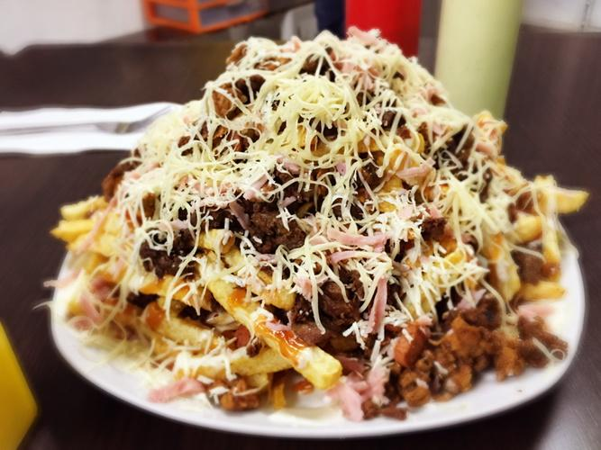

Crazy Potatoes

crazy Potatoes
It is a typical Colombian dish
It is based on a mixture of many meats, sauces and the main ingredient is potatoes.
Ingredients
- 100 grams of bacon
- 100 grams of chicken
- 100 grams of pork
- 100 grams of beef
- 1 tablespoon garlic powder, pepper, oregano, cayenne pepper, and marinade
- 1 unit of pepper
- 1 unit of onion
- 1 cup of melted cheese
- 1 tablespoon ranch sauce
Steps
- The first step to follow so that these are rich and crunchy is to chop the bacon, chicken, pork and beef,
once you have everything ready, proceed to season all the meats to your liking, except the bacon because it
is already has its own salt
- Now, it's time to chop the pepper and onion, while I heat a frying pan and the first thing you're going to
add is the bacon so that it works as a kind of oil, put the chicken, remove the bacon and after the bacon is
well cooked chicken, add pork and beef. Now put the pepper and onion, once everything is ready, remove.
- Finally, heat a frying pan if you want to make the fries or you can also make them in the oven, in a bowl
put all the cooked meats together with the pepper and onion, stir everything very well and reserve. Now
proceed to fry all the fries, this takes approximately 10 minutes once they are ready, serve on a plate and
you are going to place all the meats, the melted cheese, the ranch on top and they are ready.